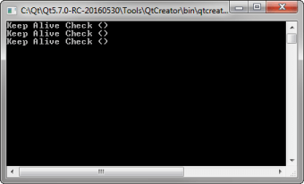

Qt WebChannel ChatServer Example
A simple chat server implemented using the QWebChannel C++ API.

ChatServer provides a chat service that the Qt WebChannel ChatClient QML Example and Qt WebChannel ChatClient HTML Example can connect to.
Running the Example
To run the example from Qt Creator, open the Welcome mode and select the example from Examples. For more information, visit Building and Running an Example.
Implementing a Chat Server
The C++ application implements a QObject which provides all mechanisms required for a chat service. This object is published through a QWebChannel which uses a WebSocket as transport.
The server provides a basic login method (username only, no passwords), which must be successfully invoked before a client is able to chat. After login, a client can invoke the method sendMessage and receive the signal newMessage to write and receive messages. Furthermore, there is a userList property which provides the names of all other connected clients. Additionally the server sends a keepAlive signal periodically to all clients. The clients have to respond to this signal, otherwise the client will be removed from the userList property.
The example shows how basic QObject elements can be used with QWebChannel, that is signals (newMessage), slots (sendMessage), and properties (userList).
Because this is a plain server application, separate clients are needed to interact with it. Qt WebChannel ChatClient QML Example and Qt WebChannel ChatClient HTML Example are client implementations compatible with this server.